Dissemination wizard gives the opportunity to validate an existing Mapping Set or to create a new one and then to validate it.
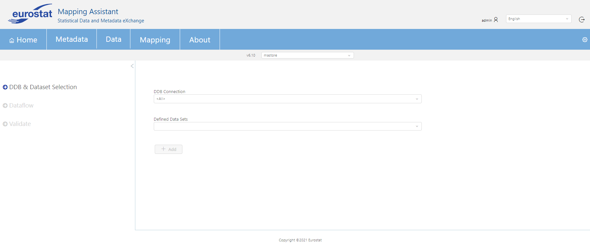
Initially, the user should select a ddb from the drop down menu (DDB Connection) that belong to the already specified mapping store. If in this database a dataset already exists then it can be selected from the drop down menu Defined Data Sets. Otherwise, if there is no defined datasets button + Add can help the user to create a new dataset (via SQL query or Visual Editor).
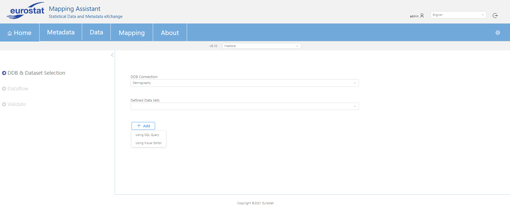
Afterwards, the user should define an already existing Dataflow from the drop down menu Select from available Dataflows as it can be seen from the below image.
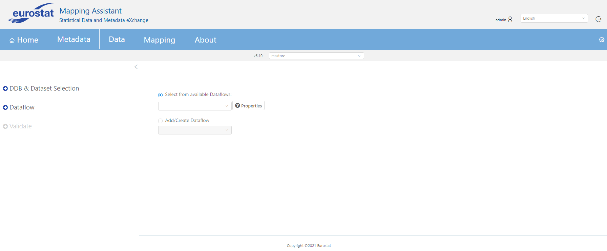
Moreover, the user can also add a new Dataflow using Add/Create Dataflow menu. It can be added with two ways, either via querying a selected registry (from those already defined from admin user) or by uploading a file (in .xml or .json format).
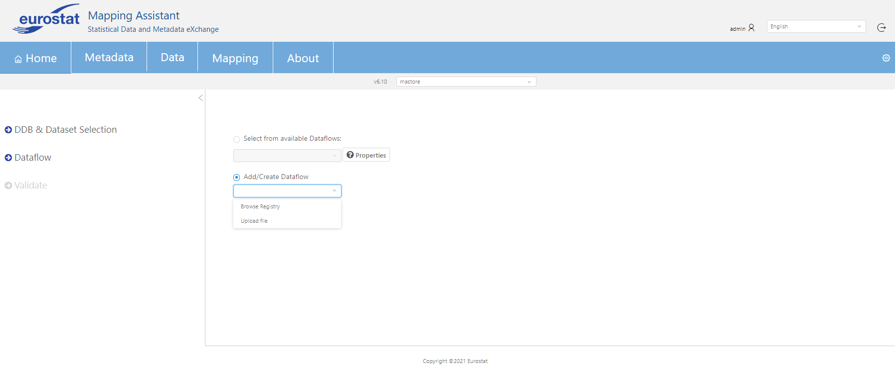
The final step is to validate the mapping set for the selected Dataflow by clicking Create/Validate Mapping Set. In case no mapping set exists for the specified Dataflow (prior to starting the Wizard), he Wizard will attempt to create one and save it in the selected mapping store.
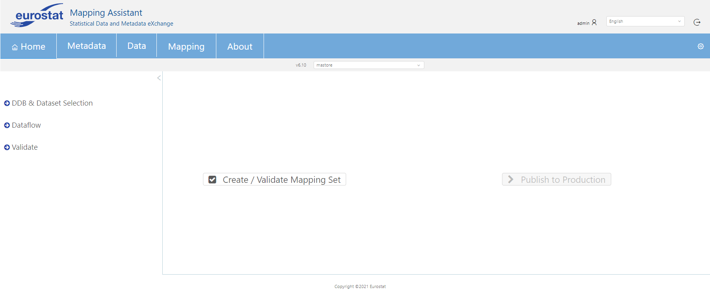
Create / Validate Mapping Set attempts to automatically create a mapping set using the selected Dataflow and Dataset from previous steps. During this process, the wizard tries to automatically match dataset columns (from the Selected Dataset) and create mappings. After a mapping set is created and the mappings have been saved, the wizard performs two kinds of validations:
1)Checking if the new mapping set is complete: The validation is successful only if each and every dimension of the Dataflow has been mapped to a dataset column or constant value.
2)Checking the validity of the dataset column values.
Two outcomes can arise from the validation process:
1)The mapping set is not complete, either because the wizard could not match all dimensions, or because the existing mapping set is missing some mappings. In this case, the user will be presented with the appropriate message and the Edit Mappings button will open the Mapping Set Editor, so that the user can manually add mappings (MAPPING_SETS_EDITOR).
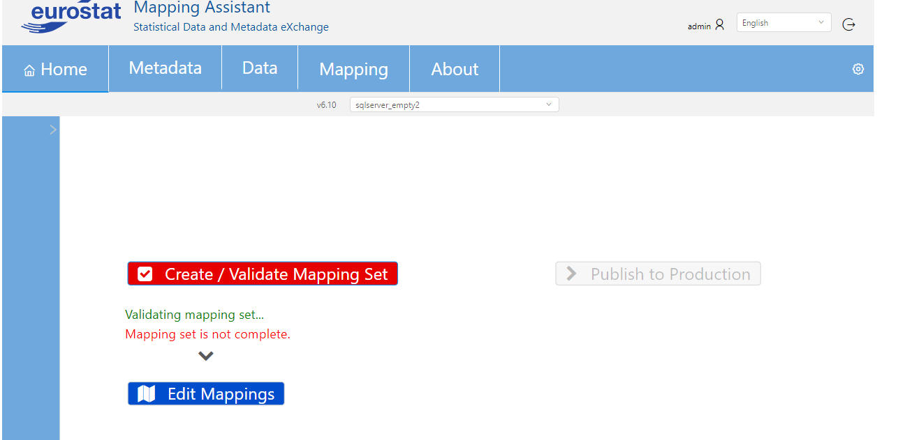
2)The mapping set is complete, but not valid. This means that the data values are not suitable, and they need to be fixed or transcoded.
The button View Errors will appear, and a new window will inform the user of the affected dimensions (in this case the TIME_PERIOD).
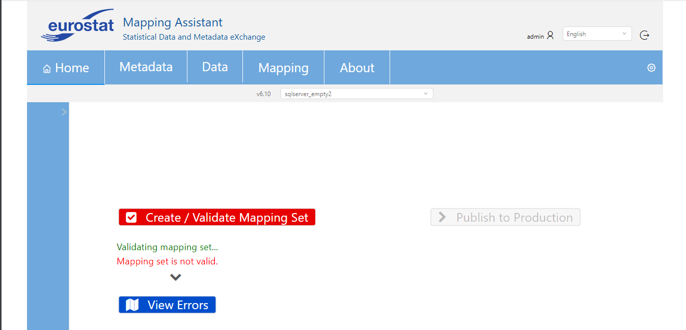
Upon collapsing each section, the user will have the option to Show Rows which loads the data for the particular mapping set and shows the wrong data values by using a red color.
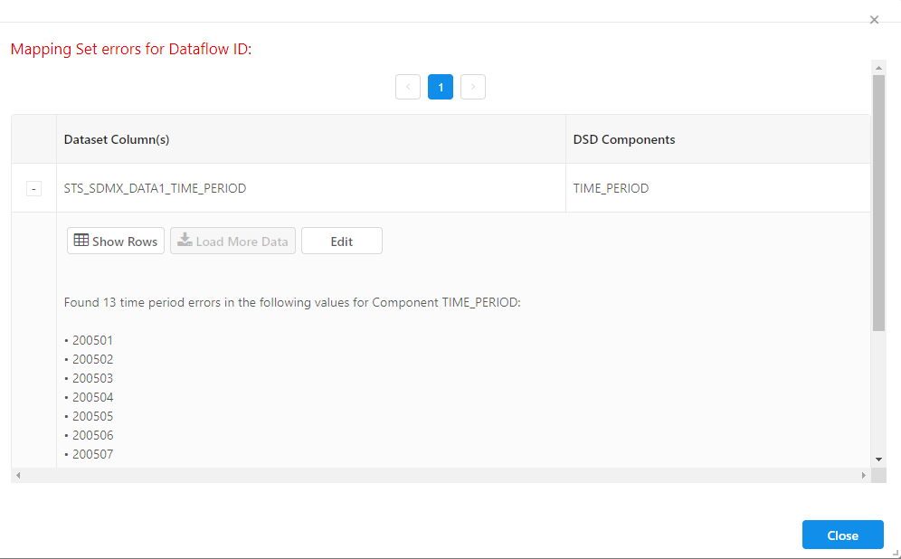
Then the user can Hide Rows or Edit. Editing will prompt the user to add transcoding (TRANSCODING_MANUAL).
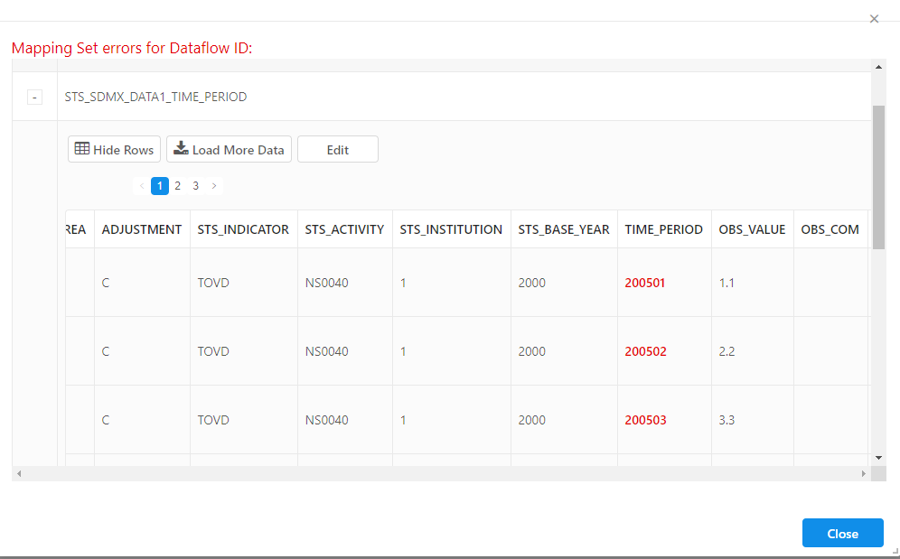
The following image demonstrates the screen for adding a new transocding:
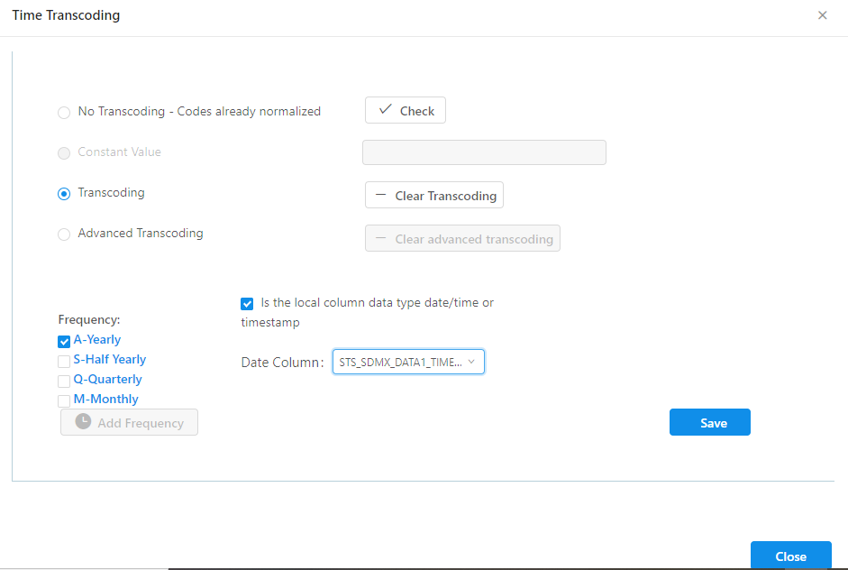
After a transcoding is applied, the user can close the windows and attempt to Create/Validate Mapping Set again. If the problem values have been resolved, the Dataflow will be able to be published to production.
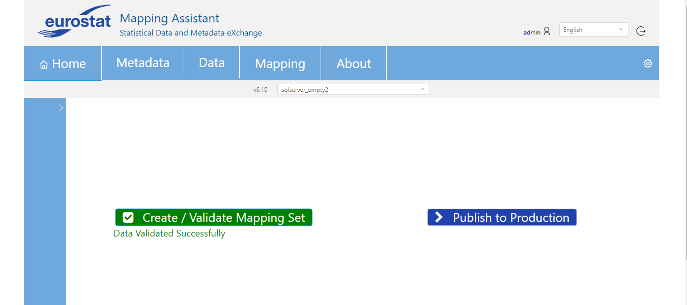